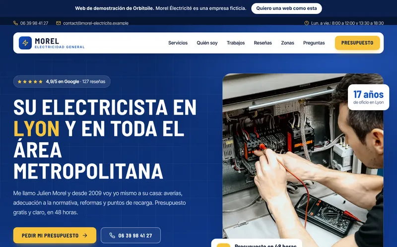
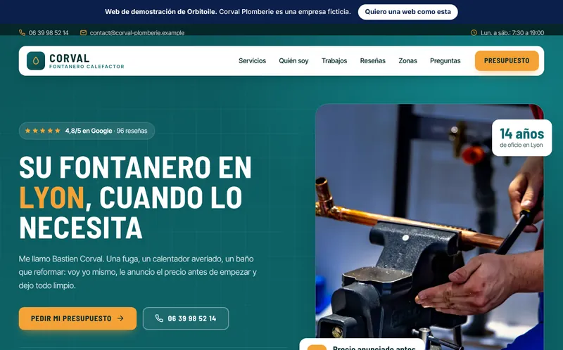
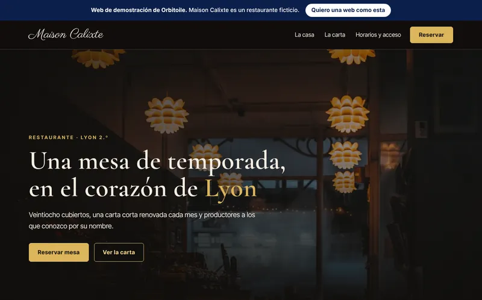

¿Cómo será su web?
Aquí tiene tres webs completas, tal como las entrego a mis clientes. Las empresas son inventadas, todo lo demás es real: el diseño, la velocidad, la versión para móvil, el aviso legal.

Artesano
Electricista en Lyon
Servicios, trabajos realizados, reseñas, zonas de intervención, preguntas frecuentes y solicitud de presupuesto. Sin cookies.
Ver la demostración
Artesano
Fontanero en Lyon
La misma base, otros colores y otros textos: averías, calentadores, baños y calefacción.
Ver la demostración
Restaurante
Restaurante en Lyon
Un ambiente de noche, la carta legible sin descargar ningún archivo, los horarios y la reserva en línea.
Ver la demostración¿Su oficio es otro? Los colores, los textos y las secciones se adaptan a su actividad. Hábleme de su proyecto en orbitoile.fr.